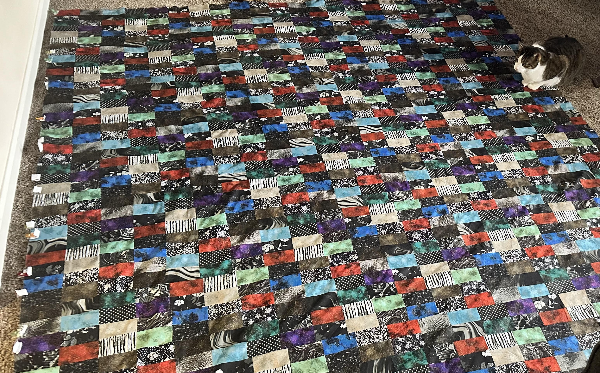
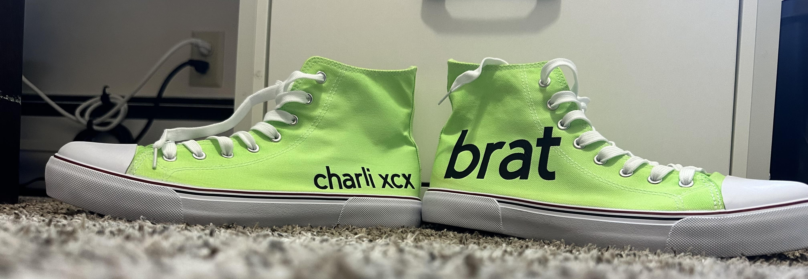
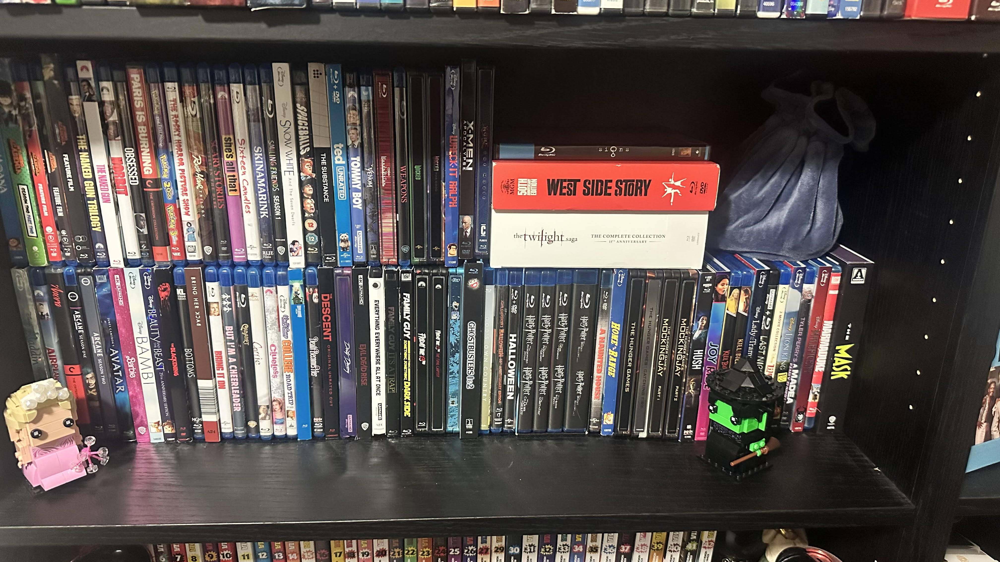

Hobbies
Sewing
I like to sew a wide variety of things. I have made quilts, clothing and sleep masks with my sewing machine. I have also used my sewing machine to patch clothing that has ripped. Below is a picture of the first quilt I made and my cat sitting on it.

Crafting
I also like to make other crafts outside of sewing. I also have a circut maker 3 that I like to make different crafts with. The project that I liked the most making was the Brat themed converse below. I got the chance to see Charli xcx in brooklyn last year and wanted to make my own outfit for the show.

Collecting Blurays
I also like to collect physical media. I try to collect mostly blur-ray discs if possible. I also collect dvds. I fine it fun finding different collector editions of movies. Such as the collector's edition of West Side story. This came with a booklet of behind the scenes information as well as pictures from the set.

Gaming
Lastly I like to play video games. I like to play both modern and retro games that I can find. In Syracuse, NY I always attend Retro Game Con. This is a ghreat place to be able to play all different kinds of retro games. As well as purchase retro games and sysytems.
Gaming systems I own
- PS5
- PS3
- Switch
- PS2
- Nintendo DS